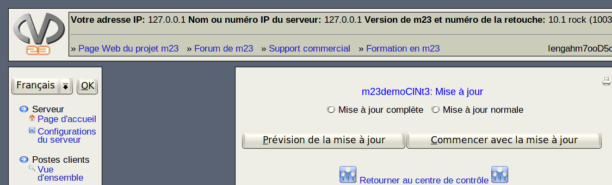

suivant:
Types de la mise
monter:
Paquets
précédent:
CONSEIL:
Table des matières
Mise à jour

Avec la fonction de mise à jour, vous pouvez mettre à jour les logiciels sur le(s) poste(s) client. Si vous avez sélectionné un seul poste client, vous pouvez voir une prévision de la mise à jour.
Sous-sections
Types de la mise à jour
root 2018-05-08